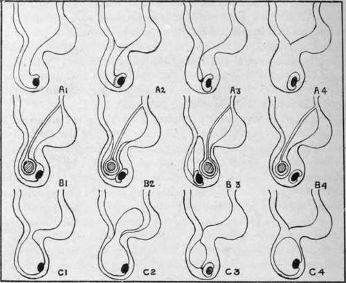

The Inguinal Region. Part 3
Description
This section is from the book "Surgical Anatomy", by John A. C. MacEwen. Also available from Amazon: Surgical Anatomy.
The Inguinal Region. Part 3
A less common form of hernia is the obturator, in which the bowel, pushing the parietal peritoneum, extraperitoneal fat, and pelvic fascia before it, passes downwards, forwards, and inwards through the obturator canal, where it may remain under the obturator externus, or, perforating or going to one side of this muscle, may present under the pectineus, behind and to the inner side of the femoral vessels, and about a finger-breadth beneath the position of exit of a femoral hernia. The obturator vessels and nerve are generally to the outer side of the sac, and pressure on the nerve may occasion pain on the inner side of the thigh, and on moving the hip-joint. This form of hernia occurs most frequently in females, and while it generally consists of bowel, may contain bladder or ovary. The hernia is generally small, and may produce no external swelling even when strangulated. In such cases pain on the inner side of the femoral vessels and inner aspect of the thigh may assist the diagnosis, while the inner aspect of the canal may be examined per vaginam in the female, or per rectum in the male, and the hernia possibly even reduced in this manner. In operating for obturator hernia a vertical incision is made midway between the femoral vein and pubic spine, the fascia lata divided, and the interval between the pectineus and adductor longus defined. The muscles are separated, the pectineus being partially divided if necessary with great care, and the hernia exposed and treated. Cutting to relieve strangulation must always be done with care, as the relation of the vessels to the sac varies.
In order to more fully explain certain forms of inguinal hernia, and as an introduction to the study of the abdominal cavity, it is necessary to turn shortly to the relationship of the peritoneum to the abdominal viscera, and to the descent of the testicle. The peritoneum, then, is a shut sac, which has no contents, but whose walls are capable of great invagination. We may imagine this closed sac (or balloon) placed in the abdominal cavity, after which the viscera to obtain room would require to push the sac wall before them, and in so doing would receive a covering from it. Thus, a loop of bowel projects itself into this hollow sac, and in so doing receives a covering of peritoneum-its serous layer-while the track of its projection is lined by a double layer of peritoneum-the mesentery-in which the vessels to supply the bowel with blood, etc., run. Unfortunately, however, the covering of peritoneum which the invaginating portion of bowel receives is not taken into account when speaking of various peritoneal layers, but is simply spoken of as the serous coat of the bowel itself. Thus, to get at the bowel through an abdominal incision, we only cut the parietal peritoneum ; the various loops of bowel then present, but each is covered by its serous layer of peritoneum, which we neglect to regard as such. The testicle in the foetus is an abdominal organ, situated at the lower end of the kidney. Thus, like the other viscera, it is outside the peritoneum, and, like the kidney, it is only partially covered by it. The testicle gradually descends from this position (pulled, it is supposed, by a foetal structure called the gubernaculum), until at birth it occupies the scrotum, having descended through the inguinal canal. In its descent it drags out a ringer-like process of peritoneum with it (this, then, is an evagination, and not an invagination), which forms an open peritoneal canal running through the inguinal canal.
Called The funicular, or vaginal, process, the inner end of which opens into the general peritoneal cavity, while the outer expanded end is closed, and partially invests the testicle.
Fig. 23.-Diagram illustrating the Developmental Obliteration of the Funicular Process (Series a), and the Forms of Inguinal Hernia (Series B), and Hydrocele (Series c) which may arise therefrom.
Series a.-Normal Descent of Testicle.
1. Funicular process entirely open (congenital).
2. Funicular process closed by septum at internal ring, and partially so at junction with tunica vaginalis (infantile).
3. Funicular process closed both above and below (infantile).
4. Funicular process entirely obliterated (adult).
Series B.-Drvelopmental Varieties of Inguinal Hernia.
1. Congenital (one layer of peritoneum to cut through).
2. Infantile (encysted) (two layers of peritoneum to divide).
3. Infantile (possibly three layers of peritoneum to divide ; testicle in front).
4. Adult (one layer of peritoneum to divide).
Series C.-Developmental Varieties of Hydrocele.
1. Congenital.
2. Infantile-bilocular ; scrotal, and intra-pelvic.
3. Infantile-encysted of cord.
4. Adult of tunica vaginalis.
This is the condition of affairs at birth, and a hernia may come down through this patent peritoneal canal into the scrotum. This would constitute a congenital hernia, the bowel (covered by its serous coat) would be in contact with the testicle (covered by its serous coat), and there would only be one layer of peritoneum between it and the outer coverings. Similarly the lower portion of this canal may distend with serous fluid, which may reach it from the abdominal cavity, with which it freely communicates, and form a congenital hydrocele. Soon after birth, in a normal case, this patent funicular process becomes obliterated, leaving the lower end, however, to form the tunica vaginalis of the testicle, which thus becomes entirely separated from the peritoneum. The obliteration of the funicular process commences usually at the internal ring, and a little later just above the epididymis, septa forming at these points. If the intervening portion of the process becomes distended with fluid, an (infantile) encysted hydrocele of the cord is formed. On the other hand, bowel may enter the unobliterated portion from the abdomen, pushing the upper septum before it. Such a form of hernia is called an encysted infantile hernia. In it the bowel is quite separate from the testicle, and is enclosed by two peritoneal layers (counting the stretched septum as one, but not reckoning the serous coat of the bowel). Again, a hydrocele may form in the common funicular process and tunica vaginalis, and push the septum at the neck of the process before it into the abdomen, forming an infantile bilocidar hydrocele. In another form of infantile hernia the bowel does not come down into the funicular process, but comes down behind it, pushing a layer of parietal peritoneum before it as it does so, or taking advantage of a peritoneal diverticulum, which Lockwood states occurs in that position from the action of the gubernaculum. Here, also, the bowel is quite apart from the testicle, and in operating from the front three layers of peritoneum require to be cut through before the serous coat of the bowel is reached. Although these forms of hernia and hydrocele are called congenital and infantile, they do not necessarily occur at birth or in infancy, but may occur in after life. Sometimes the testicle does not descend into the scrotum until some years after birth, but the funicular process may do so notwithstanding, and along it a congenital hernia may descend. The inguinal canal in the foetus is relatively shorter than in the adult, while in the female it is rather longer but narrower than in the male.
Continue to: